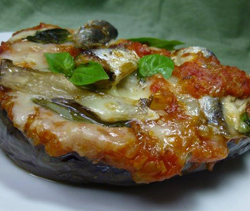

水茄子のピザ風グリル
- 調理時間：30 分
- （一人当たり）
- カロリー：245kcal
- たんぱく質：11.8g
- 脂質：17.9g
- 塩分：1.8g


＜２人分＞
- 水茄子
- 1個
- オイルサーディン
- 40g
- マイタケ
- 30g
- バジル
- 適量
- 溶けるチーズ
- 適量
トマトソース
- ・トマト
- 1/2個
- ・タマネギ
- 30g
- ・オリーブオイル
- 少々
- ・小麦粉
- 小さじ1
- ・塩
- 少々
- ・コショウ
- 少々


- なすは縦半分に切って水にさらす。キッチンペーパーで水気をふき取る。
-
＜トマトソースをつくる＞
① トマトはザク切り、タマネギは、みじん切りにする。
② フライパンに油を入れ、タマネギを炒め、しんなりするまで炒めたら、小麦粉を加えてさらに炒める。
③ トマトを加えて煮込み、塩、コショウで味をととのえる。 - オイルサーディンは食べやすい大きさに切る。マイタケは手でほぐす。
- フライパンに油（分量外）を敷いてナスを焼く。
- ① [4]のナスにトマトソースを塗って、マイタケ、オイルサーディン、バジルをのせる。
② チーズを散らして、オーブンで焦げ色がつくまで焼く。
水茄子のピザ風グリル
関東で多く食されている「千両なす」は、一年中出荷されている極早生の品種。丸い卵型の「丸ナス」は関西で有名です。そのほか、「加賀ナス」、「米ナス」、「小ナス」、「水ナス」など日本の品種だけでも、様々な形や味の特徴があります。 ナスに含まれる栄養素は、体内の塩分量を調整し、利尿効果を促すカリウムや食物繊維など。皮に含まれる「ナスニン」には抗酸化作用があり、動脈硬化や脳出血などの予防効果が期待できます。季節が移り変わるこの時期は、調理法や調味料をひと工夫！冷やす作用のあるナスは、生食ではなく加熱していただきましょう。